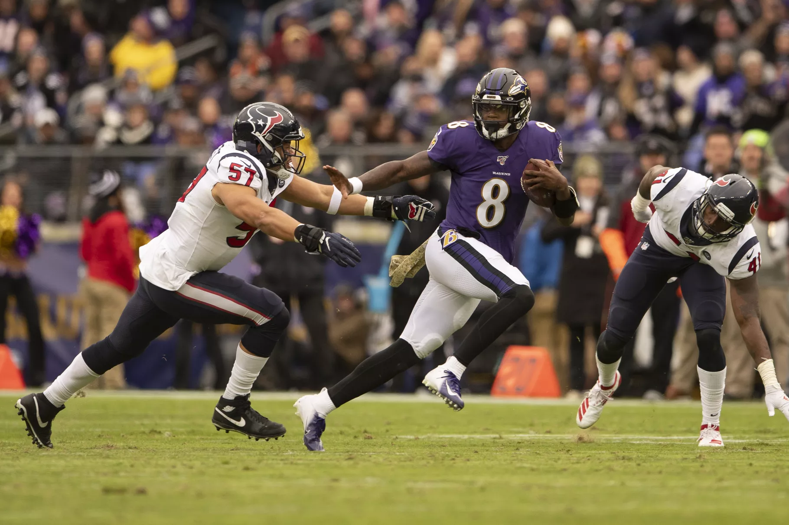

Top NFL League Highlights
Back to Index
Player Highlights
Lamar Jackson heats up to destroy the Texans in week 11
Frank Clark leads Chiefs defense to defeat the Chargers
Jimmy Garoppolo throws for 4 touchdowns in close game against the Cardinals
Todd Gurley breaks free for a big 133 yard game against the Bears
Mark Ingram As Top Offensive Player in Week 11 Week

Switch Image
In-game Highlights
Julian Edelman throws for a touchdown pass against the Eagles
Mike Williams leaps up to catch a 50 yard pass in an epic loss to the chiefs
Patriots troll the Jets in a Patriots shut out
Barner for the Falcons has the longest punt return touchdown this season against the Panthers
Broncos complete stunning trick play
Switch Image